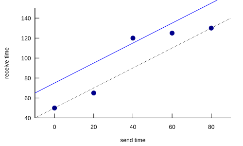
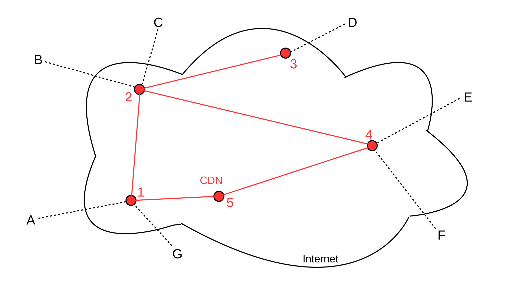

25 Quality of Service¶
So far, the Internet has been presented as a place where all traffic is sent on a best-effort basis and routers handle all traffic on an equal footing; indeed, this is often seen as a fundamental aspect of the IP layer. Delays and losses due to congestion are nearly universal. For bulk file-transfers this is usually quite sufficient; one way to look at TCP congestive losses, after all, is as part of a mechanism to ensure optimum utilization of the available bandwidth.
Sometimes, however, we may want some traffic to receive a certain minimum level of network services. We may allow some individual senders to negotiate such services in advance, or we may grant preferential service to specific protocols (such as VoIP). Such arrangements are known as quality of service (QoS) assurances, and may involve bandwidth, delay, loss rates, or any combination of these. Even bulk senders, for example, might sometimes wish to negotiate ahead of time for a specified amount of bandwidth.
While any sender might be interested in quality-of-service levels, they are an especially common concern for those sending and receiving real-time traffic such as voice-over-IP or videoconferencing. Real-time senders are likely to have not only bandwidth constraints, but constraints on delay and on loss rates as well. Furthermore, real-time applications may simply fail – at least temporarily – if these bandwidth, delay and loss constraints are not met.
In any network, large or small, in which bulk traffic may sometimes create queue backlogs large enough to cause unacceptable delay, quality-of-service assurances must involve the cooperation of the routers. These routers will then use the queuing and scheduling mechanisms of 23 Queuing and Scheduling to set aside bandwidth for designated traffic. This is a major departure from the classic Internet model of “stateless” routers that have no information about specific connections or flows, though it is a natural feature of virtual-circuit routing.
In this chapter, we introduce some quality-of-service mechanisms for the Internet. We introduce the theory, anyway; some of these mechanisms have not exactly been adopted with warm arms by the ISP industry. Sometimes this is simply the chicken-and-egg problem: ISPs do not like to implement features nobody is using, but often nobody is using them because their ISPs don’t support them. However, often an ISP’s problem with a QoS feature comes down costs: routers will have more state to manage and more work to do, and this will require upgrades. There are two specific cost issues:
- it is not clear how to charge endpoints for their QoS requests (as with RSVP), particularly when the endpoints are not direct customers
- it is not clear how to compare special traffic like multicast, for the purpose of pricing, with standard unicast traffic
Nonetheless, VoIP at least is here to stay on a medium scale. Streaming video is here to stay on a large scale. Quality-of-service issues are no longer quite being ignored, or, at least, not blithely.
Note that a fundamental part of quality-of-service requests on the Internet is sharing among multiple traffic classes; that is, the transmission of “best-effort” and various grades of “premium” traffic on the same network. One can, after all, lease a SONET line and construct a private, premium-only network; such an approach is, however, expensive. Support for multiple traffic classes on the same network is sometimes referred to generically as integrated services, a special case of traffic engineering; see [CSZ92]. It is not to be confused with the specific IETF protocol suite of that name (25.4 Integrated Services / RSVP). There are two separate issues in an integrated network:
- how to make sure premium traffic gets the service it requires
- how to integrate different traffic classes on the same network
The first issue is addressed largely through the techniques presented in 23 Queuing and Scheduling, and applies as well to networks with only a single service level. The present chapter addresses mostly the second issue.
Quality-of-service requests may be made for both TCP and UDP traffic. For example, an interactive TCP connection might request a minimum-delay path, while a bulk connection might request a maximum-bandwidth path and a streaming-prerecorded-video connection might request a specific guaranteed bandwidth. However, service quality is a particular concern of real-time traffic such as voice and interactive video, where delay can be a major difficulty. Such traffic is more likely to use UDP than TCP, because of the head-of-line blocking problem with the latter. We return to this in 25.3.3 UDP and Real-Time Traffic.
25.1 Net Neutrality¶
There is a school of thought that says carriers must carry all traffic on an equal footing, and should be forbidden to charge extra for premium service. This is a strong formulation of the “net neutrality” principle, and it potentially complicates the implementation of some of the services described here. In principle, it may not matter whether the premium service involves interaction with routers, as is described in some of the mechanisms below, or simply involves improved access to best-effort carriage.
There are, however, many weaker formulations of net neutrality; for example, one is that traffic carriage must be “non-discriminatory”. That is, a carrier could charge more for premium service so long as it did not single out individual providers for rate throttling.
Without taking sides on the net-neutrality debate, there are good reasons for arguing that additional charges for specific services from backbone routers are more appropriate than additional charges to avoid rate throttling.
25.2 Where the Wild Queues Are¶
We stated above that to ensure quality-of-service standards, it is necessary to have the participation of routers that have significant queue backlogs. It is not always clear, however, which routers these are. In the late 1990’s, it was often claimed there was significant congestion at many (or at least some) “backbone” routers, where the word is in quotes here as a reminder that the term does not have a precise technical meaning. It is worth noting that this was also the era of 56 kbps dialup access for most residential users.
In 2003, just a few years later, an analysis of the Internet in [CM03] concluded, “the Internet ‘cloud’ does not contribute heavily to congestion.” At the time of this writing (2013), it appears that the Internet backbone continues to have excess capacity, and is seldom congested; delays, therefore, are more likely to be encountered more locally. A study in [CBcDHL14], using timestamp pings to each end of suspected links, found that most congestion occurred in high-volume content-delivery networks (1.12.2 Content-Distribution Networks), such as those of Netflix and Google, and their interconnections to ISPs.
More concretely, suppose traffic from A to B goes through routers R1, R2 and R3:
If queuing delays (and losses) occur only at R1 and at R3, then there is no need to involve R2 in any bandwidth-reservation scheme; the same is true of R1 and R3 if the delays occur only at R2. Unfortunately, it is not always easy to determine the location of Internet congestion, and an abundance of bandwidth today may become a dearth tomorrow: bandwidth usage ineluctably grows to consume supply. That said, the early models for quality-of-service requests assumed that all (or at least most) routers would need to participate; it is quite possible that this is – practically speaking – no longer true. Another possible consequence is that adequate QoS levels might – might – be attainable with only the participation of one’s immediate ISP.
25.3 Real-time Traffic¶
Real-time traffic is traffic with some sort of hard or soft delay bound, presumably larger than the one-way no-load propagation delay. Such traffic can be said to be delay-intolerant. For voice or video traffic, a packet arriving after the time at which it is to be played back might as well have been lost.
Fortunately, voice and video are also loss-tolerant, at least to a degree: a lost voice packet simply results in a momentary voice dropout; a lost video packet might result in replay of the previous video frame. Handling traffic that is both loss- and delay-intolerant is very difficult; we will not consider that case further.
Much (but not all) real-time traffic is also rate-adaptive. For example, the online-video service hulu.com can send at resolutions of 288p, 360p, 480p and 720p, approximately corresponding to bandwidths of 480 kbps, 700 kbps, 1 Mbps, and 2.5 Mbps [2012 data]. Hulu’s software can dynamically choose the appropriate rate. (Hulu transmissions, where the consequence of delay is a pause in the video replay rather than a loss, are not necessarily “real-time”; see 25.3.2 Streaming Video below.)
As another example of rate-adaptiveness, the voice-grade audio-compression codec Opus (a successor to an earlier codec known as Speex) might normally be used at a 64 kbps rate, but supports a more-or-less continuous range of rates down to 8 kbps. While the lower rates have lower voice quality, they can be used as a fallback in the event that congestion prevents successful use of the 64 kbps rate.
Generally speaking, rate-adaptivity notwithstanding, real-time traffic needs sufficient management that congestion becomes minimal. Real-time traffic should not be allowed to arrive at any router, for example, faster than it can depart. The most definitive way to achieve this is via some sort of reservation or admission-control mechanism, where new connections will not be accepted unless resources are available.
25.3.1 Playback Buffer¶
Real-time applications cannot avoid delay completely, of course, so the received stream will be delivered to the receiving application (for playback, if it is a voice or video stream) slightly behind the time when it was sent. Applications can intentionally increase this time by creating a playback buffer or jitter buffer; this allows the smoothing over of variations in delay (known as jitter).
For example, suppose a VoIP application sends a packet every 20 ms (a typical rate). If the delay is exactly 50 ms, then packets sent at times T=0, 20, 40, etc will arrive at times T=50, 70, 90, etc. Now suppose the delay is not so uniform, so packets sent at T=0, 20, 40, 60, 80 arrive at times 50, 65, 120, 125, 130.
| packet | sent | expected | received | (rec’d − expected) |
|---|---|---|---|---|
| 1 | 0 | 50 | 50 | 0 |
| 2 | 20 | 70 | 65 | -5 |
| 3 | 40 | 90 | 120 | 30 |
| 4 | 60 | 110 | 125 | 15 |
| 5 | 80 | 130 | 130 | 0 |
The first and the last packet have arrived on time, the second is early, and the third and fourth are late by 30 and 15 ms respectively. Setting the playback buffer capacity to 25 ms means that the third packet is not received in time to be played back, and so must be discarded; setting the buffer to a value at least 30 ms means that all the packets are received.

The diagram above plots the points of the table. The dashed line represents the expected arrival time for the corresponding send time; packets are late by the amount they are above this line. The solid blue line represents a playback buffer corresponding to 25 ms; packets arriving at points above the line are lost. The higher the line, the more playback delay, but also the more that playback can accommodate late packets
For non-interactive voice and video, there is essentially no penalty to making the playback buffer quite long. But for telephony, if one speaker stops and the other starts, they will perceive a gap of length equal to the RTT including playback-buffer delay. For voice, this becomes increasingly annoying if the RTT delay reaches about 200-400 ms.
25.3.2 Streaming Video¶
Streaming video is something of a gray area. On the one hand, it is not really real-time; viewers do not necessarily care how long the playback-buffer delay is as long as it is consistent. Playback-buffer delays of ten seconds to up to a minute are not uncommon. As long as the sender can stay ahead of the playback application, all is well. The real issue is bandwidth; a playback-buffer delay in the tens of seconds is two orders of magnitude larger than the delay bounds that a genuine real-time application might request.
For very large videos, the sender probably coordinates with the playback application to limit how far ahead it gets; this amounts to using a fixed-size playback buffer. That playback buffer can accommodate some fluctuation in the delivery rate, but in the long run the delivery bandwidth must be at least as large as the playback rate. For smaller videos, eg traditional ten-minute YouTube clips, the sender sends as fast as it can without stopping. If the delivery bandwidth is less than the playback rate then the viewer can hit “pause” and wait until the entire video has been downloaded.
On the other hand, viewers do not particularly like pauses, especially during long videos. If a viewer starts a two-hour movie, average network congestion levels may change materially many times during that interval. The viewer would prefer a more-or-less consistent bandwidth, even if competing traffic ramps up; rate-adaptive playback is fine until one has signed up for HD-quality viewing. What the viewer here wants is an average-bandwidth guarantee. This can be supplied by overbuilding the network, by implementing some of the mechanisms of this chapter, or by various intermediate approaches.
For example, a large-enough network-content provider N might negotiate with a residential Internet carrier C so that there is sufficient long-haul bandwidth from N to the end-user viewers. If the problem is backbone congestion, then N might arrange to use BGP’s MED option (15.7.1 MED values and traffic engineering) to carry the traffic as far as possible in its own network; this may also entail the creation of a large number of peering points with C’s network (14.4.1 Internet Exchange Points). Alternatively, C might be persuaded to set aside one very large traffic category in its own backbone network (perhaps using 25.7 Differentiated Services) that is reserved for N’s traffic.
25.3.3 UDP and Real-Time Traffic¶
The main difficulty with using TCP for real-time traffic is head-of-line blocking: when a loss does occur, the TCP layer will hold any later data until the lost segment times out and is retransmitted. Even if the receiving application is able simply to ignore the lost packet, it is not granted that option.
In theory, the TCP timeout interval may be only slightly more than the RTT, which is often well under 100 ms. In practice, however, it is often much larger, due in part to the use of a coarse-grained clock to keep track of timeouts. TCP implementations are actually discouraged from using smaller timeout intervals; the following is from RFC 6298 (2011); RTO stands for Retransmission TimeOut:
Whenever RTO is computed, if it is less than 1 second, then the RTO SHOULD be rounded up to 1 second.
Such a policy makes TCP unsuitable, except in environments with vanishingly small loss rates, whenever any genuine interactive response is needed; this includes telephony, video telephony, and most forms of video conferencing that involve real-time feedback between participants. (TCP does work well with video streaming.) While it is true that the popular video-telephony package Skype does in fact use TCP, this is not because Skype has figured a way around this limitation; Skype sessions are not infrequently plagued by congestion-related difficulties. The use of UDP allows an application the option of deciding that lost or late data should simply be skipped over.
25.4 Integrated Services / RSVP¶
Integrated Services, or IntServ, was developed by the IETF in the late 1990’s as a first attempt at providing quality-of-service guarantees for selected Internet traffic. The IntServ model assumed all routers would participate, or at least all routers along the connection path, though this is not strictly necessary. Connections were to make reservations using the Resource ReSerVation Protocol RSVP.
Note that this is a major retreat from the datagram-routing stateless-router model. Were virtual circuits (5.4 Virtual Circuits) the better routing model all along? For better or for worse, the marketplace appears to have answered this question with an unambiguous “no”; IntServ has seen very limited adoption in the core Internet.
However, many of the ideas of IntServ are implementable on the internet using an appropriate Content Distribution Network. After outlining IntServ itself, we describe this CDN alternative in 25.6.1 A CDN Alternative to IntServ.
Under IntServ, routers maintain soft state about a connection, meaning that reservations must be refreshed by the sender at regular intervals (eg 30 seconds); if not, the reservation can be discarded. This also means that reservations can be recovered if the router crashes (though with some small probability of failure). Traditional virtual-circuit switches maintain hard state, so that if a sender stops sending but fails to “hang up” properly then the connection is still maintained (and perhaps charged for), and a router crash means the connection is lost.
IntServ has mostly not been supported by the backbone ISP industry. Partly this is because of practical difficulties in figuring out how to charge for reservations; if the charge is zero then everyone might make reservations for every connection. Another issue is that a busy router might have to maintain thousands of reservations; IntServ thus adds a genuine expense to the ISP’s infrastructure.
At the time IntServ was developed, the dominant application envisioned was teleconferencing, in which one speaker’s audio/video stream would be sent to a large number of receivers. Because of this, IntServ was based on IP multicast, to which we therefore turn next. This decision made IntServ somewhat more complex than would be necessary if point-to-point VoIP were all that was required, and future Internet reservation mechanisms may jettison multicast support (see 25.9 NSIS). However, multicast and IntServ do share something fundamental in common: both require the participation of intermediate routers; neither can be effectively implemented solely in end systems.
25.5 Global IP Multicast¶
The idea behind IP multicast, following up on 9.3.1 Multicast addresses, is that sender A transmits a stream of packets (real-time or not) to a set of receivers {B1, B2, …, Bn}, in such a way that no one packet of the stream is transmitted more than once on any one link. This means that it is up to routers on the way to duplicate packets that need to be forwarded on multiple outbound links. For example, suppose A below wishes to send to B1, B2 and B3 in the following diagram:
Then R1 will receive packet 1 from A and will forward it to both B1 and to R2. R2 will receive packet 1 from R1 and forward it to B2 and R3. R3 will forward only to B3; R4 does not see the traffic at all. The set of paths used by the multicast traffic, from the sender to all destinations, is known as the multicast tree; these are shown in bold.
We should acknowledge upfront that, while IP multicast is potentially a very useful technology, as with IntServ there is not much support for it within the mainstream ISP industry. The central issues are the need for routers to maintain complex new information and the difficulty in figuring out how to charge for this kind of traffic. At larger scales ISPs normally charge by total traffic carried; now suppose an ISP’s portion of a multicast tree is a single path all across the continent, but the tree branches into ten different paths near the point of egress. Should the ISP consider this to be like one unicast connection, or more like ten?
Once Upon A Time, an ideal candidate for multicast might have been the large-scale delivery of broadcast television. Ironically, the expansion of the Internet backbone has meant that large-scale video delivery is now achieved with an individual unicast connection for every viewer. This is the model of YouTube.com, Netflix.com and Hulu.com, and almost every other site delivering video. Online education also once upon a time might have been a natural candidate for multicast, and here again separate unicast connections are now entirely affordable. The bottom line for the future of multicast, then, is whether there is an application out there that really needs it.
Note that IP multicast is potentially straightforward to implement within a single large (or small) organization. In this setting, though, the organization is free to set its own budget rules for multicast use.
Multicast traffic will consist of UDP packets; there is no provision in the TCP specification for “multicast connections”. For large groups, acknowledgment by every receiver of the multicast UDP packets is impractical; the returning ACKs could consume more bandwidth than the outbound data. Fortunately, complete acknowledgments are often unnecessary; the archetypal example of multicast traffic is loss-tolerant voice and video traffic. The RTP protocol (25.11 Real-time Transport Protocol (RTP)) includes a response mechanism from receivers to senders; the RTP response packets are intended to at least give the sender some idea of the loss rate. Some effort is expended in the RTP protocol (more precisely, in the companion protocol RTCP) to make sure that these response packets, from multiple recipients, do not end up amounting to more traffic than the data traffic.
In the original Ethernet model for LAN-level multicast, nodes agree on a physical multicast address, and then receivers subscribe to this address, by instructing their network-interface cards to forward on up to the host system all packets with this address as destination. Switches, in turn, were expected to treat packets addressed to multicast addresses the same as broadcast, forwarding on all interfaces other than the arrival interface.
Global broadcast, however, is not an option for the Internet as a whole. Routers must receive specific instructions about forwarding packets. Even on large switched Ethernets, newer switches generally try to avoid broadcasting every multicast packet, preferring instead to attempt to figure out where the subscribers to the multicast group are actually located.
In principle, IP multicast routing can be thought of as an extension of IP unicast routing. Under this model, IP forwarding tables would have the usual ⟨udest,next_hop⟩ entries for each unicast destination, and ⟨mdest,set_of_next_hops⟩ entries for each multicast destination. In the diagram above, if G represents the multicast group of receivers {B1,B2,B3}, then R1 would have an entry ⟨G,{B1,R2}⟩. All that is needed to get multicast routing to work are extensions to distance-vector, link-state and BGP router-update algorithms to accommodate multicast destinations. (We are using G here to denote both the actual multicast group and also the multicast address for the group; we are also for the time being ignoring exactly how a group would be assigned an actual multicast address.)
These routing-protocol extensions can be done (and in fact it is quite straightforward in the link-state case, as each node can use its local network map to figure out the optimal multicast tree), but there are some problems. First off, if any Internet host might potentially join any multicast group, then each router must maintain a separate entry for each multicast group; there are no opportunities for consolidation or for hierarchical routing. For that matter, there is no way even to support for multicast the basic unicast-IP separation of addresses into network and host portions that was a crucial part of the continued scalability of IP routing. The Class-D multicast address block contains 228 ≃ 270 million entries, far to many to support a routing-table entry for each.
The second problem is that multicast groups, unlike unicast destinations, may be ephemeral; this would place an additional burden on routers trying to keep track of routing to such groups. An example of an ephemeral group would be one used only for a specific video-conference speaker.
Finally, multicast groups also tend to be of interest only to their members, in that hosts far and wide on the Internet generally do not send to multicast groups to which they do not have a close relationship. In the diagram above, the sender A might not actually be a member of the group {B1,B2,B3}, but there is a strong tie. There may be no reason for R4 to know anything about the multicast group.
So we need another way to think about multicast routing. Perhaps the most successful approach has been the subscription model, where senders and receivers join and leave a multicast group dynamically, and there is no route to the group except for those subscribed to it. Routers update the multicast tree on each join/leave event. The optimal multicast tree is determined not only by the receiving group, {B1,B2,B3}, but also by the sender, A; if a different sender wanted to send to the group, a different tree might be constructed. In practice, sender-specific trees may be constructed only for senders transmitting large volumes of data; less important senders put up with a modicum of inefficiency.
The multicast protocol most suited for these purposes is known as PIM-SM, defined in RFC 2362. PIM stands for Protocol-Independent Multicast, where “protocol-independent” means that it is not tied to a specific routing protocol such as distance-vector or link-state. SM here stands for Sparse Mode, meaning that the set of members may be widely scattered on the Internet. We acknowledge again that, while PIM-SM is a reasonable starting point for a realistic multicast implementation, it may be difficult to find an ISP that implements it.
The first step for PIM-SM, given a multicast group G as destination, is for the designation of a router to serve as the rendezvous point, RP, for G. If the multicast group is being set up by a particular sender, RP might be a router near that sender. The RP will serve as the default root of the multicast tree, up until such time as sender-specific multicast trees are created. Senders will send packets to the RP, which will forward them out the multicast tree to all group members.
At the bottom level, the Internet Group Management Protocol, IGMP, is used for hosts to inform one of their local routers (their designated router, or DR) of the groups they wish to join. When such a designated router learns that a host B wishes to join group G, it forwards a join request to the RP.
The join request travels from the DR to the RP via the usual IP-unicast path from DR to RP. Suppose that path for the diagram below is ⟨DR,R1,R2,R3,RP⟩. Then every router in this chain will create (or update) an entry for the group G; each router will record in this entry that traffic to G will need to be sent to the previous router in the list (starting from DR), and that traffic from G must come from the next router in the list (ultimately from the RP).
In the above diagram, suppose B1 is first to join the group. B1’s designated router is R5, and the join packet is sent R5→R2→R3→RP. R5, R2 and R3 now have entries for G; R2’s entry, for example, specifies that packets addressed to G are to be sent to {R5} and must come from R3. These entries are all tagged with ⟨*,G⟩, to use RFC 2362’s notation, where the “*” means “any sender”; we will return to this below when we get to sender-specific trees.
Now B2 wishes to join, and its designated router DR sends its join request along the path DR→R1→R2→R3→RP. R2 updates its entry for G to reflect that packets addressed to G are to be forwarded to the set {R5,R1}. In fact, R2 does not need to forward the join packet to R3 at all.
At this point, a sender S can send to the group G by creating a multicast-addressed IP packet and encapsulating it in a unicast IP packet addressed to RP. RP opens the encapsulation and forwards the packet down the tree, represented by the bold links above.
Note that the data packets sent by RP to DR will follow the path RP→R3→R2→R1, as set up above, even if the normal unicast path from R3 to R1 were R3→R4→R1. The multicast path was based on R1’s preferred next_hop to RP, which was assumed to be R2. Traffic here from sender to a specific receiver takes the exact reverse of the path that a unicast packet would take from that receiver to the sender; as we saw in 14.4.3 Hierarchical Routing via Providers, it is common for unicast IP traffic to take a different path each direction.
The next step is to introduce source-specific trees for high-volume senders. Suppose that sender S above is sending a considerable amount of traffic to G, and that there is also an R6–R2 link (in blue below) that can serve as a shortcut from S to {B1,B2}:
We will still suppose that traffic from R2 reaches RP via R3 and not R6. However, we would like to allow S to send to G via the more-direct path R6→R2. RP would initiate this through special join messages sent to R6; a message would then be sent from RP to the group G announcing the option of creating a source-specific tree for S (or, more properly, for S’s designated router R6). For R1 and R5, there is no change; these routers reach RP and R6 through the same next_hop router R2.
However, R2 receives this message and notes that it can reach R6 directly (or, in general, at least via a different path than it uses to reach RP), and so R2 will send a join message to R6. R2 and R6 will now each have general entries for ⟨*,G⟩ but also a source-specific entry ⟨S,G⟩, meaning that R6 will forward traffic addressed to G and coming from S to R2, and R2 will accept it. R6 may still also forward these packets to RP (as RP does belong to group G), but RP might also by then have an ⟨S,G⟩ entry that says (unless the diagram above is extended) not to forward any further.
The tags ⟨*,G⟩ and ⟨S,G⟩ thus mark two different trees, one rooted at RP and the other rooted at R6. Routers each use an implicit closest-match strategy, using a source-specific entry if one is available and the wildcard ⟨*,G⟩ entry otherwise.
As mentioned repeatedly above, the necessary ISP cooperation with all this has not been forthcoming. As a stopgap measure, the multicast backbone or Mbone was created as a modest subset of multicast-aware routers. Most of the routers were actually within Internet leaf-customer domains rather than ISPs, let alone backbone ISPs. To join a multicast group on the Mbone, one first identified the nearest Mbone router and then connected to it using tunneling. The Mbone gradually faded away after the year 2000.
We have not discussed at all how a multicast address would be allocated to a specific set of hosts wishing to form a multicast group. There are several large blocks of class-D addresses assigned by the IANA. Some of these are assigned to specific protocols; for example, the multicast address for the Network Time Protocol is 224.0.1.1 (though you can use NTP quite happily without using multicast). The 232.0.0.0/8 block is reserved for source-specific multicast, and the 233.0.0.0/8 block is allocated by the GLOP standard; if a site has a 16-bit Autonomous System number with bytes x and y, then that site automatically gets the multicast block 233.x.y.0/24. A fuller allocation scheme waits for the adoption and development of a broader IP-multicast strategy. This may never happen.
25.6 RSVP¶
We next turn to the RSVP (ReSerVation) protocol, which forms the core of IntServ.
The original model for RSVP was to support multicast, so as to support teleconferencing. For this reason, reservations are requested not by senders but by receivers, as a multicast sender may not even know who all the receivers are. Reservations are also for one direction; bidirectional traffic needs to make two reservations.
Like multicast, RSVP generally requires participation of intermediate routers.
Reservations include both a flowspec describing the traffic flow (eg a unicast or multicast destination) and also a filterspec describing how to identify the packets of the flow. We will assume that filterspecs simply define unidirectional unicast flows, eg by specifying source and destination sockets, but more general filterspecs are possible. A component of the flowspec is the Tspec, or traffic spec; this is where the token-bucket specification for the flow appears. Tspecs do not in fact include a bound on total delay; however, the degree of queuing delay at each router can be computed from the TB(r,Bmax) token-bucket parameters as Bmax/r.
The two main messages used by RSVP are PATH packets, which move from sender to receiver, and the subsequent RESV packets, which move from receiver to sender.
Initially, the sender (or senders) sends a PATH message to the receiver (or receivers), either via a single unicast connection or to a multicast group. The PATH message contains the sender’s Tspec, which the receivers need to know to make their reservations. But the PATH messages are not just for the ultimate recipients: every router on the path examines these packets and learns the identity of the next_hop RSVP router in the upstream direction. The PATH messages inform each router along the path of the path state for the sender.
As an example, imagine that sender A sends a PATH message to receiver B, using normal unicast delivery. Suppose the route taken is A→R1→R2→R3→B. Suppose also that if B simply sends a unicast message to A, however, then the route is the rather different B→R3→R4→R1→A.
As A’s PATH message heads to B, R2 must record that R1 is the next hop back to A along this particular PATH, and R3 must record that R2 is the next reverse-path hop back to A, and even B needs to note R3 is the next hop back to A (R1 presumably already knows this, as it is directly connected to A). To convey this reverse-path information, each router inserts its own IP address at a specific location in the PATH packet, so that the next router to receive the PATH packet will know the reverse-path next hop. All this path state stored at each router includes not only the address of the previous router, but also the sender’s Tspec. All these path-state records are for this particular PATH only.
The PATH packet, in other words, tells the receiver what the Tspec is, and prepares the routers along the way for future reservations.
The actual traffic from sender A to receiver B will eventually be forwarded along the standard unicast path (or multicast-tree branch) from A to B, just like PATH messages from A to B. Routers will still have to check, though, whether each packet forwarded is part of a reservation or not, in order to give reserved traffic preferential drop rates and reduced queuing delays, and in order to police the reservation to ensure that the sender is not sending more reserved traffic than agreed. Reserved traffic is identified by source and destination IP addresses and port numbers. This IP-address-and-port combination can be likened to the VCI of virtual-circuit routing (5.4 Virtual Circuits), though it is constant along the path.
After receiving the sender’s PATH message, each receiver now responds with its RESV message, requesting its reservation. The RESV packets are passed back to the sender not by the default unicast route, but along the reverse path created by the PATH message. In the example above, the RESV packet would travel B→R3→R2→R1→A. Each router (and also B) must look at the RESV message and look up the corresponding PATH record in order to figure out how to pass the reservation message back up the chain. If the RESV message were sent using normal unicast, via B→R3→R4→R1→A, then R2 would not see it.
Each router seeing the RESV path must also make a decision as to whether it is able to grant the reservation. This is the admission control decision. RSVP-compliant routers will typically set aside some fraction of their total bandwidth for their reservations, and will likely use priority queuing to give preferred service to this fraction. However, as long as this fraction is well under 100%, bulk unreserved traffic will not be shut out. Fair queuing can also be used.
Reservations must be resent every so often (eg every ~30 seconds) or they will time out and go away; this means that a receiver that is shut down without canceling its reservation will not continue to tie up resources.
If the RESV messages are moving up a multicast tree, rather than backwards along a unicast path, then they are likely to reach a router that already has granted a reservation of equal or greater capacity. In the diagram below, router R has granted a reservation for traffic from A to receiver B1, reached via R’s interface 1, and now has a similar reservation from receiver B2 reached via R’s interface 2.
Assuming R is able to grant B2’s reservation, it does not have to send the RESV packet upstream any further (at least not as requests for a new reservation); B2’s reservation can be merged with B1’s. R simply will receive packets from A and now forward them out both of its interfaces 1 and 2, to the two receivers B1 and B2 respectively.
It is not necessary that every router along the path be RSVP-aware. Suppose A sends its PATH messages to B via A→R1→R2a→R2b→R3→B, where every router is listed but R2a and R2b are part of a non-RSVP “cloud”. Then R2a and R2b will not store any path state, but also will not mark the PATH packets with their IP addresses. So when a PATH packet arrives at R3, it still bears R1’s IP address, and R3 records R1 as the reverse-path next hop. It is now possible that when R3 sends RESV packets back to R1, they will take a different path R3→R2c→R1, but this does not matter as R2a, R2b and R2c are not accepting reservations anyway. Best-effort delivery will be used instead for these routers, but at least part of the path will be covered by reservations. As we outlined in 25.2 Where the Wild Queues Are, it is quite possible that we do not need the participation of the various R2’s to get the quality of service wanted; perhaps only R1 and R3 contribute to delays.
In the multicast multiple-sender/multiple-receiver model, not every receiver must make a reservation for all senders; some receivers may have no interest in some senders. Also, if rate-adaptive data transmission protocols are used, some receivers may make a reservation for a sender at a lower rate than that at which the sender is sending. For this to work, some node between sender and receiver must be willing to decode and re-encode the data at a lower rate; the RTP protocol provides some support for this in the form of RTP mixers (25.11.1 RTP Mixers). This allows different members of the multicast receiver group to receive the same audio/video stream but at different resolutions.
From an ISP’s perspective, the problems with RSVP are that there are likely to be a lot of reservations, and the ISP must figure out how to decide who gets to reserve what. One model is simply to charge for reservations, but this is complicated when the ISP doing the charging is not the ISP providing service to the receivers involved. Another model is to allow anyone to ask for a reservation, but to maintain a cap on the number of reservations from any one site.
These sorts of problems have largely prevented RSVP from being implemented in the Internet backbone. That said, RSVP is apparently quite successful within some corporate intranets, where it can be used to support voice traffic on the same LANs as data.
25.6.1 A CDN Alternative to IntServ¶
The core components of IntServ are, arguably,
- IP multicast
- Traffic reservations
While “true” IntServ implementations of these may never come to widespread (or even narrow) adoption, for many purposes a content-distribution network (1.12.2 Content-Distribution Networks) can achieve the same two goals of multicasting and reservations, without requiring any cooperation from the backbone routing infrastructure.
CDN-based strategies do not necessarily implement actual reservations, but they do attempt to provide corresponding traffic guarantees (or almost-guarantees) appropriate to the application. For videoconferencing, these include sufficient bandwidth and bounded delay. For online gaming, on the other hand, the primary goal is usually extremely small queuing delay, or “lag”. Player-to-player bandwidth requirements are often very modest. As of 2019, there are multiple “gaming private networks” (or “optimized gaming networks”) available to gamers that operate on the principles described here.
Imagine a videoconference presenter at node A, below. Nodes B through G represent video receivers. According to the IntServ strategy, we would create a multicast tree rooted at A, and then A’s video presentation would be multicast to nodes B through G. The links on this multicast tree – consisting of both the red and the dashed links in the image below – would each (or mostly each) maintain an appropriate traffic reservation.

But instead of that, imagine that we have a network – that is, a CDN – consisting of multiple publicly accessible nodes (called points of presence, or PoPs), all connected by high-speed links (virtual or physical). These links between nodes are represented by the red lines in the diagram above. Each of the users A-G then connects to the CDN, using the usual public Internet; these are the dashed lines. These connections will probably be made under the aegis of a videoconferencing provider that has leased the services of the CDN. Each user – using software from the provider – attempts to connect to the closest, or at least to a reasonably close, access point of the CDN.
The CDN will be made aware of A as data source and B-G as subscribers, and will forward A’s incoming data from 1 to 2, 3 and 4. A’s data will, in keeping with the idea of multicast, not be forwarded along any link twice. This forwarding will most likely be done within the videoconferencing application layer rather than by IP-layer multicasting. That is, CDN node 1 will receive A’s data stream and distribute it within the CDN to nodes 2, 3 and 4 as the CDN sees fit. In other words, application-layer multicasting is straightforward to implement in software alone.
For real-time traffic, performance may depend on the implementation of the red intra-CDN links. The gold standard, in terms of support for real-time streaming, is for the red links to be private leased lines – and routers – over which the CDN has full control. In this case, load and queuing delay can be regulated as necessary, and true reservations (internal to the CDN) can be granted if necessary. Gaming private networks often require private links, because delay on the commodity Internet is difficult to minimize. The Google internal wide-area network (as of 2017), known as B4, has this sort of architecture; it carries huge volumes of traffic. See [JKMOPSVWZ13].
At the other end, these red links may simply be paths through the public Internet, making the CDN an “overlay” network vaguely resembling the original Mbone. In this case the CDN’s real-time traffic will compete with other traffic. This isn’t necessarily bad, however, if the red links – which probably are Internet “backbone” links – have high capacity. Perhaps more importantly, a CDN is a large customer for the ISPs that connect it, and likely has a close business relationship with them. If congestion is a business problem for the CDN, in that it wants to attract videoconferencing providers as clients, it is in a strong position to negotiate appropriate service guarantees and even partial isolation of its real-time traffic flows.
However the intra-CDN links are implemented, data will flow in our multicast scenario as follows:
- From source A to CDN node 1, using the Internet
- Throughout the CDN’s internal links as necessary
- From CDN nodes 1, 2, 3 and 4 to subscribers B through G, using each subscriber’s Internet link
Many teleconferencing and gaming services use this sort of architecture. Subscribers can be charged for the privilege of using the network, solving the multicast and reservation pricing issues. In principle (though very seldom in practice) subscribers can be told the network is busy if congestion levels are high, addressing the reservation admission issue. More likely, the provider would handle high-use periods by allowing performance to degrade, while also attempting to provision the network so that it is adequate “most” of the time.
If the CDN is “small” – perhaps a dozen points of presence – then the dashed normal-Internet links from users to the CDN might end up handling most of the traffic carriage. However, if the dashed links are not the sources of congestion, a small CDN might still produce a large performance benefit. Furthermore, if the CDN is reasonably large, then the dashed links may shrink to intra-city distances, and the red links will handle the long-haul traffic.
25.7 Differentiated Services¶
Differentiated Services, or DiffServ, was created as a low-overhead alternative to IntServ; see RFC 2475 for an overall introduction. The idea behind DiffServ is to replace IntServ’s many reservations with a small handful of service classes: a single regular class (for everyone’s bulk traffic) and a few premium classes (for what in IntServ would have been everyone’s reserved traffic). For this reason, DiffServ can be described as providing “coarse-grained” resource allocation versus RSVP’s “fine-grained” per-flow allocations. Like IntServ, DiffServ is easiest to implement within a single ISP or Autonomous System; however, DiffServ may be reasonably practical to implement across ISP boundaries as well. A set of routers agreeing on a common DiffServ policy is called a DS domain; a DS domain might consist of a single ISP but might also comprise a larger “backbone” ISP and some “regional” customer ISPs that have negotiated a single DiffServ policy.
Packets are marked for premium service at (and only at) the border routers of each DS domain, as the traffic in question enters that domain. The DS domain’s interior routers do no marking and no traffic policing. At these interior routers, priority queuing is generally used to give premium service to the marked packets.
As a simple example of the DiffServ approach, suppose an ISP has a thousand customers. The ith customer negotiates bandwidth ri for the “premium” portion of its traffic; the ISP ensures that the sum of all the ri’s is less than a maximum designated rate r. The ISP enforces each premium rate cap ri at the point of customer i’s connection, and also marks that customer’s premium traffic. The ISP can now guarantee each of its customers its individual premium rate simply by ensuring that a bandwidth of at least r is available throughout its network, and by handling marked premium packets on a priority basis. Only one internal service class is needed – premium – despite a thousand different individual bandwidth guarantees.
Packets are marked using the six bits of the DS field of the IPv4 header (9.1 The IPv4 Header); these were part of what was originally the IP Type-of-Service bits. DiffServ traffic classes are known as Per Hop Behaviors, or PHBs; the name comes from the identification of traffic classes with how each router is to handle packets of that class. The simplest PHB is the default PHB, meaning the packet gets no special processing. The other PHBs all provide for at least some degree of preferred service.
The Class Selector PHB is for backwards compatibility with the three-bit precedence subfield of the old IPv4 Type-of-Service field, originally proposed as a three-bit priority field.
The Expedited Forwarding (EF) PHB (25.7.1 Expedited Forwarding) is arguably the best service. It is meant for traffic that has delay constraints in addition to rate constraints. The newer Voice Admit PHB is closely related and has been recommended as the preferred PHB for voice telephony. We will look more closely at this PHB below.
Assured Forwarding, or AF (25.7.2 Assured Forwarding), is really four separate PHBs, corresponding to four classes 1 through 4. It is meant for providing (soft) service guarantees that are contingent on the sender’s staying within a certain rate specification. Each AF class has its own rate specification; these rate specifications are entirely at the discretion of the implementing DS domain. AF uses the first three bits to denote the AF class, and the second three bits to denote the drop precedence. More detail is at 25.7.2 Assured Forwarding.
Here are the six-bit patterns for the above PHBs; the AF drop-precedence bits are denoted “ddd”.
- 000 000: default PHB (best-effort delivery)
- 001 ddd: AF class 1 (the lowest priority)
- 010 ddd: AF class 2
- 011 ddd: AF class 3
- 100 ddd: AF class 4 (the best)
- 101 110: Expedited Forwarding
- 101 100: Voice Admit
- 11x 000: Network control traffic (RFC 2597)
- xxx 000: Class Selector (traditional IPv4 Type-of-Service)
The goal behind premium PHBs such as EF and AF is for the DS domain to set some rules on admitting premium packets, and hope that their total numbers to any given destination are small enough that high-level service targets can be met. This is not exactly the same as a guarantee, and to a significant degree depends on statistics. The actual specifications are written as per-hop behaviors (hence the PHB name); with appropriate admission control these per-hop behaviors will translate into the desired larger-scale behavior.
One possible Internet arrangement is that a leaf domain or ISP would support RSVP, but hands traffic off to some larger-scale carrier that runs DiffServ instead. Traffic with RSVP reservations would be marked on entry to the second carrier with the appropriate DS class.
25.7.1 Expedited Forwarding¶
The goal of the EF PHB is to provide low queuing delay to the marked packets; the canonical example is VoIP traffic, even though the latter now has its own PHB. EF is generally considered to be the best DS service, though this depends on how much EF traffic is accepted by the DS domain.
Each router in a DS domain supporting EF is configured with a committed rate, R, for EF traffic. Different routers can have different committed rates. At any one router, RFC 3246 spells out the rule this way (note that this rule does indeed express a per-hop behavior):
Intuitively, the definition of EF is simple: the rate at which EF traffic is served at a given output interface should be at least the configured rate R, over a suitably defined interval, independent of the offered load of non-EF traffic to that interface.
To the EF traffic, in other words, each output interface should appear to offer bandwidth R, with no competing non-EF traffic. In general this means that the network should appear to be lightly loaded, though that appearance depends very much on strict control of entering EF traffic. Normally R will be well below the physical bandwidths of the router’s interfaces.
RFC 3246 goes on to specify how this apparent service should work. Roughly, if EF packets have length L then they should be sent at intervals L/R. If an EF packet arrives when no other EF traffic is waiting, it can be held in a queue, but it should be sent soon enough so that, when physical transmission has ended, no more than L/R time has elapsed in total. That is, if R and L are such that L/R is 10µs, but the physical bandwidth delay in sending is only 2µs, then the packet can be held up to 8µs for other traffic.
Note that this does not mean that EF traffic is given strict priority over all other traffic (though implementation of EF-traffic processing via priority queuing is a reasonable strategy); however, the sending interface must provide service to the EF queue at intervals of no more than L/R; the EF rate R must be in effect at per-packet time scales. Queuing ten EF packets and then sending the lot of them after time 10L/R is not allowed. Fair queuing can be used instead of priority queuing, but if quantum fair queuing is used then the quantum must be small.
An EF router’s committed rate R means simply that the router has promised to reserve bandwidth R for EF traffic; if EF traffic arrives at a router faster than rate R, then a queue of EF packets may build up (though the router may be in a position to use some of its additional bandwidth to avoid this, at least to a degree). Queuing delays for EF traffic may mean that someone’s application somewhere fails rather badly, but the router cannot be held to account. As long as the total EF traffic arriving at a given router is limited to that routers’ EF rate R, then at least that router will be able to offer good service. If the arriving EF traffic meets a token-bucket specification TB(R,B), then the maximum number of EF packets in the queue will be B and the maximum time an EF packet should be held will be B/R.
So far we have been looking at individual routers. A DS domain controls EF traffic only at its border; how does it arrange things so none of its routers receives EF traffic at more than its committed rate?
One very conservative approach is to limit the total EF traffic entering the DS domain to the common committed rate R. This will likely mean that individual routers will not see EF traffic loads anywhere close to R.
As a less-conservative, more statistical, approach, suppose a DS domain has four border routers R1, R2, R3 and R4 through which all traffic must enter and exit, as in the diagram below:
Suppose in addition the domain knows from experience that exiting EF traffic generally divides equally between R1-R4, and also that these border routers are the bottlenecks. Then it might allow an EF-traffic entry rate of R at each router R1-R4, meaning a total entering EF traffic volume of 4×R. Of course, if on some occasion all the EF traffic entering through R1, R2 and R3 happened to be addressed so as to exit via R4, then R4 would see an EF rate of 3×R, but hopefully this would not happen often.
If an individual ISP wanted to provide end-user DiffServ-based VoIP service, it might mark VoIP packets for EF service as they entered (or might let the customer mark them, subject to the ISP’s policing). The rate of marked packets would be subject to some ceiling, which might be negotiated with the customer as a certain number of voice lines. These marked VoIP packets would receive EF service as they were routed within the ISP.
For calls also terminating within that ISP – or switching over to the traditional telephone network at an interface within that ISP – this would be all that was necessary, but some calls will likely be to customers of other ISPs. To address this, the original ISP might negotiate with its ISP neighbors for continued preferential service; such service might be at some other DS service class(eg AF). Packets would likely need to be re-marked as they left the original ISP and entered another.
The original ISP may have one larger ISP in particular with which it has a customer-provider relationship. The larger ISP might feel that with its high-volume internal network it has no need to support preferential service, but might still agree to carry along the original ISP’s EF marking for use by a third ISP down the road.
25.7.2 Assured Forwarding¶
AF, documented in RFC 2597, is simpler than EF, but with little by way of a delay guarantee. The macroscopic goal is to grant specific rate assurances to certain traffic classes, eg the traffic from a certain set of customers. Distinct traffic classes are represented by distinct AF classes, which are limited to four. If a contributor to a traffic class sends more traffic than that particular contributor is permitted, the excess traffic is simply marked with a higher drop precedence. Further on in the network, the traffic may or may not be dropped.
The drop-precedence values for the second three bits for the AF classes are as follows:
- 010: do not drop
- 100: medium
- 110 high
Different priority-queuing levels may used for the different AF classes; this would ensure that all the traffic needs of AH class 4 are met before AH class 3, and down the line to AH class 1 at the lowest AH priority, just above bulk (default) traffic. Provided careful limits are placed on how much traffic is admitted to each class, strict priority queuing need not lead to the starvation of bulk traffic. Use of priority queuing is not mandatory; another option is fair queuing where the higher-precedence AH classes get a greater fair-queuing-guaranteed fraction of the total bandwidth, at least relative to their traffic volumes.
Traffic with different drop-precedence values within a single AF class, however, is not assigned to different subqueues (Priority, Fair or otherwise). Doing that would almost certainly lead to significant reordering of the overall traffic, and reordering tends to be bad for TCP traffic. If different priority-queuing levels were used here, for example, higher-drop-precedence packets would be delayed until lower-drop-precedence queues were emptied; almost any form of queuing using multiple queues for a different output interface would likely lead to at least some reordering. So long as one TCP connection remains in a single AF class (eg because all traffic to or from a given site remains in a single AF class), the packets of that connection should not be reordered.
A classic application of AF is for an ISP to be able to grant different performance levels to different customers: gold, silver and bronze (again from the Appendix to RFC 2597). Customers would pay an ISP more to carry their traffic in a higher category. Along with their AF level, each customer would negotiate with the ISP their average rate and also their “committed” and “excess” burst (bucket) capacities. As the customer’s traffic entered the network, it would encounter two token-bucket filters, with rate equal to the agreed-upon rate and with the two different bucket sizes: TB(r,Bcommitted) and TB(r,Bexcess). Traffic compliant with the first token-bucket specification would be marked “do not drop”; traffic noncompliant for the first but compliant for the second would be marked “medium” and traffic noncompliant for either specification would be marked with a drop precedence of “high”. (The use of Bexcess here corresponds to the sum of “committed burst size” and “excess burst size” in the Appendix to RFC 2597.)
Customers would thus be free to send faster than their agreed-upon rate, subject to the excess traffic being marked with a lower drop precedence.
This process means that an ISP can have many different Gold customers, each with widely varying rate agreements, all lumped together in the same AF-4 class. The individual customer rates, and even the sum of the rates, may have only a tenuous relationship to the actual internal capacity of the ISP, although it is not in the ISP’s long-term interest to oversubscribe any AF level.
If the ISP keeps the AF class 4 traffic sparse enough, it might outperform EF traffic in terms of delay. The EF PHB rules, however, explicitly address delay issues while the AF rules do not.
25.8 RED with In and Out¶
Differentiated Services Assured Forwarding (AF) fits nicely with RIO routers: RED with In and Out (or In, Middle, and Out); see 21.5.4 RED. In RIO routers, each drop-precedence value (the “In”, “Middle” and “Out” here) is subject to a different drop threshold. Packets with higher drop-precedence values would experience RED signaling losses at correspondingly lower degrees of RED queue utilization. This means that TCP connections with a significant fraction of higher-drop-precedence values would encounter RED-induced losses sooner – and would thus reduce their congestion window sooner – than connections that stayed within their committed rate. Because each AF class is sent at a single priority, TCP connections within a single AF class should not experience problems(eg reordering) other than these RED signaling losses. All this has the effect of gently encouraging customers to stay within their committed traffic limits.
RIO is likely to have a meaningful effect only on TCP connections; real-time UDP traffic may be affected slightly or not at all by RED signaling-type losses.
25.9 NSIS¶
The practical problem with RSVP is the need for routers to participate. One approach to gaining ISP cooperation might be a lighter-weight version of RSVP, though that is speculative; Differentiated Services was supposed to be just that and it too has not been widely adopted within the commercial Internet backbone.
That said, work has been underway for quite some time now on a replacement protocol suite. One candidate is Next Steps In Signaling, or NSIS, documented in RFC 4080 and RFC 5974.
NSIS breaks the RSVP design into two separate layers: the signal transport layer, charged with figuring out how to reach the intermediate routers, and the higher signaling application layer, charged with requesting actual reservations. One advantage of this two-layer approach is that NSIS can be adapted for other kinds of signaling, although most NSIS signaling can be expected to be related to a specific network flow. For example, NSIS can be used to tell NAT routers to open up access to a given inside port, in order to allow a VoIP (or other) connection to proceed.
Generally speaking, NSIS also abandons the multicast-centric approach of RSVP. Signaling traffic travels hop-by-hop from one NSIS Element, or NE, to the next NE on the path. In cases when the signaling traffic follows the same path as the data (the “path-coupled” case), the signaling packet would likely be addressed to the ultimate destination, but recognized by each NE router on the path. NE routers would then add something to the packet, and perhaps update their own internal state. Nonparticipating (non-NE) routers would simply forward the signaling packet, like any other IP packet, further towards its ultimate destination.
25.10 Comcast Congestion-Management System¶
The large ISP Comcast introduced a DiffServ-like scheme to reduce internal congestion; this was eventually documented in RFC 6057. The effect of the scheme is to reduce bandwidth for those subscribers who are using the largest amount of bandwidth; this reduction is done only when the ISP’s local network is experiencing significant congestion. The goal is to avoid saturation of the ISP-level backbone, thus perhaps improving fairness for other users.
By throttling bulk traffic throughout its network before maximum capacities are reached, this strategy has the potential to improve the performance of real-time protocols without IntServ- or DiffServ-type mechanisms.
During non-congested operation, all user traffic is tagged within Comcast’s network as Priority Best Effort (PBE). This is akin to a medium drop precedence for a particular DiffServ Assured Forwarding class (25.7.2 Assured Forwarding), though RFC 6057 does not claim that DiffServ is actually used. When congestion occurs, traffic of some high-volume users may be tagged instead as Best Effort (BE), meaning that it has a lower priority and a higher drop precedence.
The mechanism first defines a Near-Congestion State for ports on routers at a certain level of Comcast’s network. These routers are known as Cable Modem Termination Systems, or CMTS’s. Each CMTS node serves about 5,000 subscribers. Near-Congestion State is declared when the port utilization exceeding a specific percentage of its maximum for a specific amount of time; typically the utilization threshold is 70-80% and the time interval is 15 minutes. One CMTS port typically serves 200-300 customers. Previous experience had established CMTS ports as the likely locus for congestion.
When a particular CMTS port enters the Near-Congestion State, the port’s traffic is monitored on a per-subscriber basis to see if any subscribers are in an Extended High Consumption State, or EHCS, again triggered when a subscriber exceeds a given percentage of their subscriber rate for a given number of minutes. The threshold for entering EHCS state is typically 70% of the subscriber rate – either the upstream rate or the downstream rate – for 15 minutes.
When the switch port is in Near-Congestion State and the subscriber’s traffic is in EHCS, then all that subscriber’s traffic is marked Best Effort (BE) rather than PBE, corresponding to a higher AF drop precedence. Downstream traffic is marked (at the CMTS or even higher up in the network) if it is the user’s downstream utilization that is high; upstream traffic is marked at the user’s connection to the network if upstream utilization is high.
Other routers may then drop BE-marked traffic preferentially, versus PBE-marked traffic. This will occur only at routers that are actively experiencing congestion, perhaps using a mechanism like RIO (25.8 RED with In and Out), though RIO was originally intended only for TCP traffic.
A subscriber leaves the EHCS state when the subscriber’s bandwidth drops below 50% of the subscription rate for 15 minutes, where presumably the 50% rate is measured over some very short timescale. Note that this means that a user with a TCP sawtooth ranging from 30% to 60% of the maximum might remain in the EHCS state indefinitely.
Also note that all the subscriber’s traffic will be marked as BE traffic, not just the overage. The intent is to provide a mild disincentive for sustained utilization within 70% of the subscriber maximum rate.
Token bucket specifications are not used, except possibly over very small timescales to define utilizations of 50% and 70%. The (larger-scale) token-bucket alternative might be to create a token-bucket specification for each customer TB(r,B) where r is some fraction of the subscription rate and B is a bucket of modest size. All compliant traffic would then be marked PBE and noncompliant traffic would be marked BE. Such a mechanism might behave quite differently, as only traffic actually over the ceiling would be marked.
25.11 Real-time Transport Protocol (RTP)¶
RTP is a convenient framework for carrying real-time traffic. It runs on top of UDP, largely to avoid head-of-line blocking (16.1 User Datagram Protocol – UDP), and offers several advantages over raw UDP. It does not, however, involve interactions with the intervening routers, and therefore cannot offer any service guarantees.
RTP headers include a sequence number, an application-provided timestamp representing when the attached data was recorded, and basic mechanisms for handling traffic that is a merger of several original sources (“contributing sources”) of related content. RTP also includes support for multicast transmission, eg for the voice and video streams that make up a teleconference. Indeed, teleconferencing is arguably the application for which RTP was developed, although it is also widely used for point-to-point applications such as VoIP.
Perhaps the most striking feature of RTP is the absence of frequent acknowledgments. There is indeed a provision for receiver responses, but they are often sent only at several-second intervals, and are frequently omitted entirely. These responses use the companion RTCP protocol, and the “receiver report” format. RTCP receiver-report packets are often thought of not as acknowledgments but as a source of statistics about how the RTP flow is being delivered; in particular, the RTCP packets contain a ratio of how many sender packets arrived since the previous RTCP report, the highest sequence number received, and a measure of the degree of jitter.
For multicast, the infrequent acknowledgments make sense. If every receiver of a multicast group sent acknowledgments totaling 3% of the received-content bandwidth (about the TCP ratio), and if there were 100 receivers in the group (not large for a teleconference), then the total acknowledgment traffic arriving at the sender would be triple the content traffic. There are, in fact, mechanisms in place to limit the total RTCP bandwidth to no more than 5% of the outbound content stream; if a multicast stream has thousands of receivers then those receivers will each respond relatively infrequently (eg at intervals of many seconds, if not many minutes).
Even in one-to-one transmission settings, though, RTP may not send many acknowledgments. Many VoIP systems are configured not to send RTCP responses at all by default; when these are enabled, the rate has a typical minimum of one RTCP response per second. In one second, a VoIP sender may transmit 50 packets. One explanation for this is that when a voice call is encountering significant congestion, the participants are expected to hang up, rather than keep the line open.
For two-way voice calls, symmetric RTP is often used (RFC 4961). This means that each party uses the same port for sending and receiving. This is done only for convenience and to handle NAT routers; the two separate directions are completely independent and do not serve as acknowledgments for one another, as would be the case for bidirectional TCP traffic. Indeed, one can block one direction of a VoIP symmetric-RTP stream and the call continues on indefinitely, transmitting voice only in the other direction. When the block is removed, the blocked voice flow simply resumes.
25.11.1 RTP Mixers¶
Mixers are network nodes that take one or more RTP source streams and perform any combination of the following operations
- consolidation of multiple streams into one
- translation to a different audio or video format
- re-encoding to a lower-bandwidth format
As an example of consolidation, video of several panelists might be consolidated into a single video frame, in which the current speaker has a larger window. At the audio level, a mixer might combine the streams from several individual microphones. If all parties are at the same location this kind of consolidation can be performed by the primary sender, but mixers may be useful if conference participants are geographically dispersed. As for translation, some participants may prefer to receive in a different format.
Perhaps the most important task for mixers, however, is rate-adaptation. With a unicast connection, if congestion is experienced then the sender itself can adapt to it by switching the encoding. This is not appropriate for multicast, however; if one receiver is experiencing congestion it is not unlikely that other receivers may be doing just fine. Therefore, if a multicast receiver is having trouble receiving at a high data rate, it is up to it to find a mixer that offers a lower-rate encoding, and switch its subscription/reservation to that mixer instead. Mixers offering a range of rates might be set up near the sender (or at least logically near); they might also be geographically distributed to be nearer to clusters of likely receivers. One host might provide several mixers offering a range of bandwidth options.
One thing mixers do not do is mix audio and video together; separate audio and video streams should be carried by separate RTP sessions. RTP packets carry timestamps to allow a receiver to synchronize audio and video playback, so mixing is not necessary. But more importantly, mixing of audio and video makes it difficult to re-encode to a different format, difficult for a receiver to subscribe only to the audio, and difficult for the RTCP reports to indicate which original stream was encountering more losses.
An individual sending point in RTP, complete with timing information, is called a synchronization source or SSRC. At the point of origin, each camera and microphone might be an SSRC. SSRCs are identified by a 32-bit identifier. Actual SSRC identifiers are to be chosen pseudorandomly (and there is a provision in the protocol for making sure two different sources do not choose the same SSRC identifier), but for many practical purposes the SSRC can be thought of as a host identifier, like an IP address.
When a mixer combines multiple SSRCs into one stream (or even when a mixer takes as input only a single SSRC), the mixer becomes the new synchronization source and creates a new SSRC identifier for all its output packets; the mixer also generates a new series of synchronization timestamps. However, the SSRC identifiers for the streams that the mixer used as input are attached to all RTP packets from the mixer; each of these is now known as a contributing source or CSRC.
25.11.2 RTP Packet Format¶
The basic RTP header has the following format, from RFC 3550:
The Ver field holds the version, currently 2. The P bit indicates that the RTP packet includes at least one padding byte at the end; the final padding byte contains the exact count.
The X bit is set if an extension header follows the basic header; we do not consider this further.
The CC field contains the number of contributing source (CSRC) identifiers (below). The total header size, in 32-bit words, is 3+CC.
The M bit is set to allow the marking, for example, of the first packet of each new video frame. Of course, the actual video encoding will also contain this information.
The Payload Type field allows (or, more precisely, originally allowed) for specification of the audio/visual encoding mechanism (eg µ-law/G.711), as described in RFC 3551. Of course, there are more than 27 possible encodings now, and so these are typically specified via some other mechanism, eg using an extension header or the separate Session Description Protocol (RFC 4566) or as part of the RTP stream’s “announcement”. RFC 3551 put it this way:
During the early stages of RTP development, it was necessary to use statically assigned payload types because no other mechanism had been specified to bind encodings to payload types…. Now, mechanisms for defining dynamic payload type bindings have been specified in the Session Description Protocol (SDP) and in other protocols….
The sequence-number field allows for detection of lost packets and for correct reassembly of reordered packets. Typically, if packets are lost then the receiver is expected to manage without them; there is no timeout/retransmission mechanism in RTP.
The timestamp is for synchronizing playback. The timestamp should be sufficiently fine-grained to support not only smooth playback but also the measurement of jitter, that is, the degree of variation in packet arrival.
Each encoding mechanism chooses its own timestamp granularity. For most telephone-grade voice encodings, for example, the timestamp clock increments at the canonical sampling rate of 8,000 times a second, corresponding to one DS0 channel (6.2 Time-Division Multiplexing). RFC 3551 suggests a timestamp clock rate of 90,000 times a second for most video encodings.
Many VoIP applications that use RTP send 20 ms of voice per packet, meaning that the timestamp is incremented by 160 for each packet. The actual amount of data needed to send 20 ms of voice can vary from 160 bytes down to 20 bytes, depending on the encoding used, but the timestamp clock always increments at the 8,000/sec, 160/packet rate.
The SSRC identifier identifies the primary data source (the “synchronization source”) of the stream. In most cases this is either the identifier for the originating camera/microphone, or the identifier for the mixer that repackaged the stream.
If the stream was processed by a mixer, the SSRC field identifies the mixer, and the SSRC identifiers of the original sources are now listed in the CSRC (“contributing sources”) section of the header. If there was no mixer involved, the CSRC section is empty.
25.11.3 RTP Control Protocol¶
The RTP Control Protocol, or RTCP, provides a mechanism for exchange of a variety of extra information between RTP participants. RTCP packets may be Sender Reports (SR packets) or Receiver Reports (RR packets); we are mostly interested in the latter.
RTCP receiver reports are the only form of acknowledgments for RTP transmission. These are, however, unlike any other form of acknowledgment we have considered; for one thing, there is generally no question of retransmitting any lost data. RTCP RR packets should perhaps be thought of as statistical summaries regarding delivery rather than acknowledgments per se; in some cases they may in effect simply relay to senders the information “multicast is not working today”.
RTCP packets contain a list of several SSRCs; for each SSRC, the message includes
- the fraction of RTP packets that were lost in the most recent interval
- the cumulative number of packets lost since the session began
- the highest sequence number received
- a measure of the interarrival jitter (below)
- for RR packets, information about the most recent RTCP SR packet
Jitter is measured as the mean deviation in actual arrival times, versus theoretical arrival times, and is measured in units of the RTP timestamp clock (above). The actual formula is as follows. For each packet Pi, we can record the actual time of arrival in RTP timestamp units as Ri and we can save the RTP timestamp included in the packet as Si. We first calculate the ith deviation as follows:
Devi = (Ri - Ri-1) - (Si - Si-1)
For evenly spaced packets, the deviation will be zero. For VoIP packets, Si - Si-1 is likely exactly 160; Ri - Ri-1 is the actual arrival interval in eighths of milliseconds.
We then calculate the cumulative jitter as follows, where 𝛼 = 15/16:
Ji = 𝛼×Ji-1 + (1-𝛼)×Devi
In a multicast setting, if an RTP receiver is experiencing excessive losses, its most practical option is probably to find a mixer offering a lower-bandwidth encoding, or that is otherwise more likely to provide low-congestion service. RTCP packets are not needed for this.
In a unicast setting, an RTP sender can – at least theoretically – use the information provided by RTCP RRs to adapt its transmission rate downwards, to better make use of the available bandwidth. A sender might also use TFRC (21.3.1 TFRC) to calculate a TCP-friendly sending rate; there are Internet drafts for this ([GP11]), but as yet no RFC. TFRC also allows for a gradual adjustment in rate to accommodate the new conditions.
Of course, TFRC can only be used to adjust the sending rate if the sending rate is in fact adaptive, at the application level. This, of course, requires a rate-adaptive encoding.
RFC 3550 specifies a mechanism to make sure that RTCP packets do not consume more than 5% of the total RTP bandwidth, and, of that 5%, RTCP RR packets do not account for more than 75%. This is achieved by each receiver learning from RTCP SR packets how many other receivers there are, and what the total RTP bandwidth is. From this, and from some related information, each RTP receiver can calculate an acceptable RTCP reporting interval. This interval can easily be in the hundreds of seconds.
Mixers are allowed to consolidate RTCP information from their direct subscribers, and forward it on to the originating sources.
25.11.4 RTP and VoIP¶
Voice-over-IP data is often carried by RTP, although VoIP calls are initially set up using the Session Initiation Protocol, SIP (RFC 3261), or some other setup protocol such as H.323. As part of the call set-up process, the SIP nodes organizing the call exchange IP addresses and port numbers for the actual endpoints. Each endpoint then is informed of the address and port for the other endpoint, and the endpoints more-or-less immediately begin sending one another RTP packets. If an endpoint is behind a NAT firewall, its associated SIP server may have to continue forwarding packets.
VoIP calls typically send voice data in packets containing 20ms of audio input. If the standard DS0 G.711 encoding is used, 8 bytes are needed for each millisecond of voice and so each packet has 160ms of data. The G.711 encoding includes both µ-law and A-law encoders; these are both variations on the idea of having the 8-bit samples be proportional to the logarithm of the actual sound intensity.
Other voice encoders provide a greater degree of compression. For example, when G.729 voice encoding is used for VoIP then each packet will carry 20 ms of voice in 20 bytes of data. Each such packet will also, typically, have 54 bytes of header (14 bytes of Ethernet header, 20 bytes of IP header, 8 bytes of UDP header and 12 bytes of RTP header). Despite a payload efficiency of only 20/74 ≃ 27%, this is generally considered acceptable, if not ideal.
VoIP connections often do not make much use of the data in the RTCP packets; it is not uncommon, in fact, for RTCP packets not even to be sent. The general presumption is that if the voice quality is not adequate, the users involved should simply hang up. The most common voice encoders (eg G.711 and, for that matter, G.729) are not rate-adaptive, and so if a call is encountering congestion there is nothing that can be done. That said, RTCP packets may provide useful information regarding jitter experienced by the call. Furthermore, as we mentioned above in 25.3 Real-time Traffic, some voice codecs – such as Opus and Speex – do support rate-adaptiveness.
25.12 Multi-Protocol Label Switching (MPLS)¶
Currently, MPLS is a way of tagging certain classes of traffic, and perhaps routing them altogether differently from other classes of traffic. While IPv4 has always allowed routing based on tagged QoS levels, this feature was seldom used, and a common assumption for both Integrated and Differentiated Services was that the priority traffic essentially took the same route as everything else. MPLS allows priority traffic to take an entirely different route.
MPLS started out as a way of routing IP and non-IP traffic together, and later became a way to avoid the then-inefficient lookup of an IP address at every router. It has, however, now evolved into a way to support the following:
- creation of explicit routes for IP traffic, either in bulk or by designated class.
- large-scale virtual private networks (VPNs)
We are mostly interested in MPLS for the first of these; as such, it provides an alternative way for ISPs to handle real-time traffic. The explicit routes are defined using virtual circuits (5.4 Virtual Circuits).
In effect, virtual-circuit tags are added to each packet, on entrance to the routing domain, allowing packets to be routed along a predetermined path. The virtual circuit paths need not follow the same route that normal IP routing would use, though note that link-state routing protocols such as OSPF already allow different routes for different classes of service.
We note also that the MPLS-labeled traffic might very well use the same internal routers as bulk traffic; priority or fair queuing would then still be needed at those routers to make sure the MPLS traffic gets the desired level of service. However, the use of MPLS at least makes the classification problem easier: internal routers need only look at the tag to determine the priority or fair-queuing class, and deep-packet inspection can be avoided. MPLS would also allow the option that a high-priority flow would travel on a special path through its own set of routers that do not also service low-priority traffic.
Generally MPLS is used only within one routing domain or administrative system; that is, within the scope of one ISP. Traffic enters and leaves looking like ordinary IP traffic, and the use of MPLS internally is completely invisible. This local scope of MPLS, however, has meant that it has seen relatively widespread adoption, at least compared to RSVP and IP multicast: no coordination with other ISPs is necessary.
To implement MPLS, we start with a set of participating routers, called label-switching routers or LSRs. (The LSRs can comprise an entire ISP, or just a subset.) Edge routers partition (or classify) traffic into large flow classes; one distinct flow (which might, for example, correspond to all VoIP traffic) is called a forwarding equivalence class or FEC. Different FECs can have different quality-of-service targets. Bulk traffic not receiving special MPLS treatment is not considered to be part of any FEC.
A one-way virtual circuit is then created for each FEC. An MPLS header is prepended to each IP packet, using for the VCI a label value related to the FEC. The MPLS label is a 32-bit field, but only the first 20 bits are part of the VCI itself. The last 12 bits may carry supplemental connection information, for example ATM virtual-channel identifiers and virtual-path identifiers (5.5 Asynchronous Transfer Mode: ATM).
It is likely that some traffic (perhaps even a majority) does not get put into any FEC; such traffic is then delivered via the normal IP-routing mechanism.
MPLS-aware routers then add to their forwarding tables an MPLS table that consists of ⟨labelin, interfacein, labelout, interfaceout⟩ quadruples, just as in any virtual-circuit routing. A packet arriving on interface interfacein with label labelin is forwarded on interface interfaceout after the label is altered to labelout.
Routers can also build their MPLS tables incrementally, although if this is done then the MPLS-routed traffic will follow the same path as the IP-routed traffic. For example, downstream router R1 might connect to two customers 200.0.1/24 and 200.0.2/24. R1 might assign these customers labels 37 and 38 respectively.
R1 might then tell its upstream neighbors (eg R2 above) that any arriving traffic for either of these customers should be labeled with the corresponding label. R2 now becomes the “ingress router” for the MPLS domain consisting of R1 and R2.
R2 can push this further upstream (eg to R3) by selecting its own labels, eg 17 and 18, and asking R3 to label 200.0.1/24 traffic with label 17 and 200.0.2/24 with 18. R2 would then rewrite VCIs 17 and 18 with 37 and 38, respectively, before forwarding on to R1, as usual in virtual-circuit routing. R2 might not be able to continue with labels 37 and 38 because it might already be using those for inbound traffic from somewhere else. At this point R2 would have an MPLS virtual-circuit forwarding table like the following:
| interfacein | labelin | interfaceout | labelout |
|---|---|---|---|
| R3 | 17 | R1 | 37 |
| R3 | 18 | R1 | 38 |
One advantage here of MPLS is that labels live in a flat address space and thus are easy and simple to look up, eg with a big array of 65,000 entries for 16-bit labels.
MPLS can be adapted to multicast, in which case there might be two or more labelout, interfaceout combinations for a single input.
Sometimes, packets that already have one MPLS label might have a second (or more) label “pushed” on the front, as the packet enters some designated “subdomain” of the original routing domain.
When MPLS is used throughout a domain, ingress routers attach the initial label; egress routers strip it off. A label information base, or LIB, is maintained at each node to hold any necessary packet-handling information (eg queue priority). The LIB is indexed by the labels, and thus involves a simpler lookup than examination of the IP header itself.
MPLS has a natural fit with Differentiated Services (25.7 Differentiated Services): the ingress routers could assign the DS class and then attach an MPLS label; the interior routers would then need to examine only the MPLS label. Priority traffic could be routed along different paths from bulk traffic.
MPLS also allows an ISP to create multiple, mutually isolated VPNs; all that is needed to ensure isolation is that there are no virtual circuits “crossing over” from one VPN to another. If the ISP has multi-site customers A and B, then virtual circuits are created connecting each pair of A’s sites and each pair of B’s sites. A and B each probably have at least one gateway to the whole Internet, but A and B can communicate with each other only through those gateways.
MPLS sometimes interacts somewhat oddly with traceroute (10.4.1 Traceroute and Time Exceeded). If a packet’s TTL reaches 0 at an MPLS router, the router will usually generate the appropriate ICMP Time Exceeded message, but then attach to it the same MPLS label that had been on the original packet. As a result, the ICMP message will continue on to the downstream egress router before being sent back to the original sender. If nothing else, this results in an unusually large round-trip-time report. To the traceroute initiator it will appear as if all the internal routers in the MPLS domain are the same distance from the initiator as the egress router.
25.13 Epilog¶
Quality-of-service guarantees for real-time and other classes of traffic have been an area of active research on the Internet for over 20 years, but have not yet come into the mainstream. The tools, however, are there. Protocols requiring global ISP coordination – such as RSVP and IP Multicast – may come slowly if at all, but other protocols such as Differentiated Services and MPLS can be effective when rolled out within a single ISP.
Still, after twenty years it is not unreasonable to ask whether integrated networks are in fact the correct approach. One school of thought says that real-time applications (such as VoIP) are only just beginning to come into the mainstream, and integrated networks are sure to follow, or else that video streaming will take over the niche once intended for real-time traffic. Perhaps IntServ was just ahead of its time. But the other perspective is that the marketplace has had plenty of opportunity to make up its mind and has answered with a resounding “no”, and it is time to move on. Perhaps having separate networks for bulk traffic and for voice is not unreasonable or inefficient after all. Or perhaps the Internet will evolve into a network where all traffic is handled by real-time mechanisms. Time, as usual, may tell, but not, perhaps, quickly.
25.14 Exercises¶
1.0. Suppose someone proposes TCP over multicast, in which each router collects the ACKs returning from the group members reached through it, and consolidates them into a single ACK. This now means that, like the multicast traffic itself, no ACK is duplicated on any single link.
What problems do you foresee with this proposal? (Hint: who will send retransmissions? How long will packets need to be buffered for potential retransmission?)
2.0. In the following network, suppose traffic from RP to R3-R5 is always routed first right and then down, while traffic from R3–R5 to RP is always routed first left and then up. What is the multicast tree for the group G = {B1,B2,B3}?
RP──────R1──────R2
│ │ │
│ │ │
R3──────R4──────R5
│ │ │
B1 B2 B3
3.0. What should an RSVP router do if it sees a PATH packet but there is no subsequent RESV packet?
4.0. In 25.7.1 Expedited Forwarding there is an example of an EF router with committed rate R for packets with length L. If R and L are such that L/R is 10µs, but the physical bandwidth delay in sending is only 2µs, then the packet can be held up to 8µs for other traffic.
How large a bulk-traffic packet can this router send, in between EF packets? Your answer will involve L.
5.0. Suppose, in the diagram in 25.7.1 Expedited Forwarding, EF was used for voice telephony and at some point calls entering through R1, R2 and R3 were indeed all directed to R4.
Note that the ISP has no control over who calls whom.